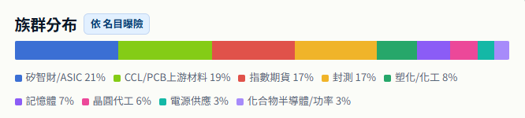

跳至筆記內容
段落導覽
盤前（明日）── 今晚寫，明天不准改
明天該處理的
—
總體
大盤籌碼
VIX（臺指選擇權波動率）
現貨法人買賣超
單位：億元。
融資融券餘額
臺股期貨未平倉
散戶多空比
臺指選擇權留倉
想法
- 昨天外資未平倉空單大補，今天僅加空1487口
- 前兩個交易日到今天其實盤面是有續強，首先站出來的封測族群有強不只一天，與以往一天強一天被倒爛的趨勢有所不同
- 目前市場廣度還沒完全恢復，但短期確立是強的沒錯
- 昨天強勢夜盤上漲，早上開高900被倒，但看盤面上有二到三個大族群有所表現，而且盤後外資現貨買超，暫時不做減碼
- 觀察載板有無續強
庫存
族群分布 點圖查看原尺寸

族群 | ASIC：2454發哥、3443創意
- 想法：主要族群，沒做好的部份是沒有把創意配比拉高，考量水位部份可能要互相調整不做單純加碼
- 決策：漲多觀察，今天原本以為指數要順勢攻高，加得稍微高了
- 進場點：4888（今+5420）／6055
- 停損：
- 停利：破5000／8000
族群 | CCL：6213聯茂、1303南亞
- 想法：今天以為要續攻，均線附近承接，南亞抱一陣子也錯過減碼點位，大哥台光投信賣外資連接，二哥台爠981有接
- 決策：
- 進場點：560、240
- 停損：530、220 或與大盤背離太多
- 停利：600、創高
族群 | 封測：3711日月光、2449京元電、3264欣銓、6147頎邦
- 想法：續強兩三天，相對其他高本益比的族群也算低基期，且明年是封測年，看這一波有無機會做爆發
- 決策：平均打，今天加的都套了，成本平滑一點，6147抓215附近接
- 進場點：687、309、283.5、182
- 停損：680、300、268
- 停利：看創高
族群 | 記憶體：8299群聯、3006晶豪科
- 想法：受宏碁董事長感言可能有所影響，抱了一陣若3006還是被丟爛是得走、8299看有沒過2300
- 決策：
- 進場點：1923、296
- 停損：2300、270 或與大盤背離太多
- 停利：2300、300
族群 | 晶圓代工：2303聯電
- 想法：夜盤可調整，靠近前高，題材也不少（矽橋、產能利用率），不過世界可能也要配比一點，今天其實大資還是站買方
- 決策：
- 進場點：140
- 停損：150
- 停利：前高
族群 | 電源：2308台達
- 想法：電源系列現股有BBU，但如果指數要創高勢必也會有達哥一份，近幾日有突破可能，投信買外資賣，再抓機會加碼
- 決策：
- 進場點：1848
- 停損：1850
- 停利：過2000
族群 | 功率：2481強茂
- 想法：碰到一個頸線位置，看是否需要消化，外資投信同買可以再加
- 決策：
- 進場點：163.5
- 停損：160
- 停利：190
觀察
族群 | ABF：3189景碩、8046南電
- 想法：BT載板報價部份，但已經有3037現貨，觀察有無續強再決定
- 決策：
- 進場點：885、1150
- 停損：875、1125
- 停利：925、1225
族群 | 散熱：3653健策、3324雙鴻
- 想法：目前比較強的是3653，投信認養高價股，型態上3324最強
- 決策：
- 進場點：5700、1550
- 停損：5500、1500
- 停利：創高
盤中 ── 有動作才寫，沒動作留空
盤後 ── 當晚覆盤
事件
- 開高一路往下倒，損益一路吃到0
- 有漲的標的可以在跌的時候把跟跌的先出，看尾盤有無機會再接
- 預期往上走的話與劇本不符合要趕快調整
- 觀察價格沒有繼續推的話要嘗試做調整部位，抓看看強勢股
執行落差
- 計畫了沒做好：
- 開高減碼
- 事後檢討：
- 先界定時間壓力，上攻暫停就可以嘗試丟或開盤先丟
- 沒計畫卻做了：
- —
- 事後檢討：
- —
與論點的對照
—
紀律自評
↑ 回到頂端